Portraits, n°2, with Alain Pumir (Lyon, 2019), Laboratoire de Physique ENS de Lyon, ENS article, blog report
Gammes Différentielles air no. 1 presentation at Planétarium de Vaulx-en-Velin, conference on Einstein equation w/ Olivier Druet & Marc Lachièze-Rey, event, tweets: 1, 2, 3
Award ceremony for Prix Jeune Chercheur 2019 (commissioned artwork Dame Recherche), tweets: 1, 2, 3, 4, 5
Variations Physiques vol. 2 at Direction régionale du CNRS DR7 Rhône-Auvergne & Institut de Physique des 2 Infinis, Villeurbanne (FR), CNRS tweet, IP2I tweet
Variations Physiques vol. 2 at Bibliothèque Michel Serres - Ecole Centrale de Lyon, Ecully (FR), https://bibli.ec-lyon.fr/evenements/2019/atelier-realite-virtuelle-variations-physiques-2
Variations Physiques vol. 2 at Festival Pléiades in partnership w/ ARCAN, Saint-Etienne (FR), http://www.arcan.io/event_2019_pleiades.php
Short documentary on Variations Physiques by DUNES & ENS de Lyon, documentary, tweet
Variations Physiques vol. 2 at Fête de la Science, ENS de Lyon, FDS general article, CNRS tweet
Variations Physiques vol. 1 at Village des Sciences, Musée des Confluences, 80 ans CNRS, ENS post (FR), CNRS coverage, LabPhy tweet, ENS tweet, ENS tweet
Live VR creation at GRETSI 2019 symposium on signal processing, blog article
Presentation at Pop'Sciences 2019 summer seminar (FR) @ Planétarium de Vaulx-En-Velin
Variations Physiques vol. 1 at Pop'Sciences Festival, about Pop'Sciences (FR), LabPhy news, tweet
Mise en Abysses at DN[A] Festival, project description (FR)
Mise en Abysses & Variations Physiques vol. 1 at Festival DN[A], Reportage TV Grenoble, video link
Variations Physiques vol. 1 at Festival DN[A], TV Grenoble - Si on parlait video link (25:00), fest program (days 3&4), project description, La Casemate article
Prix Jeune Chercheur 2019 du Grand Lyon, artwork creation Dame Recherche, with Alex Bourgeois, Article (FR), new page, apparently
Portraits, n°1, Laboratoire de Physique de l'ENS de Lyon, with Ludovic Bellon (Lyon, 2019), ENS article 1 (FR), ENS article 2 (FR), ENS article 3 (EN), Blog report, tweet
Article on TECHNICA MAGAZINE (FR), https://www.centraliens-lyon.net/technica/article/alex-andrix-rencontre-avec-un-chercheur-d-art/116, ACL tweet
Art exhibition at École Centrale de Lyon, 190cm x 268cm prints, conference, VR experience (FR, 2018), Bibliothèque Michel Serres article, Opening talk, Commenting VR experience on YouTube (FR), tweets: 1, 2, 3, 4
Art exhibition at École Normale Supérieure de Lyon, Fête de la Science (FR, 2018), Ecole Centrale de Lyon article, ENS article, ENS tweets: 1, 2, 3
Variations Physiques VR experience, Trailer, VR event (FR), Pop'Sciences Festival article (FR), LabPhy M2 gallery opening
Kinexperience residency at Subsistances (Lyon, 2019), Link 1, Link 2, Link 3, Link 4, tweet
(I quitted the project, the articles might get re-written)
LaboNRV article on Kinexperience sprint 1 (FR, 2018), http://labo-nrv.io/projet/kinexperience/
Workshop Création Immersive #2, AADN, jan. 2019, info
Improving HSL Recognition Skills with a Color Game (2016), http://alexandrix.com/huehunt/assets/Improving%20HSL%20Recognition%20Skills%20with%20a%20Color%20Game.pdf
Animation de particules sur réseau hexagonal (FR, 2017), http://website.simplx.fr/blog/2017/02/07/animation-de-particules-sur-un-reseau-hexagonal/
L’aventure fluide : des systèmes de particules à Navier-Stokes (FR, 2017), http://website.simplx.fr/blog/2017/09/19/laventure-fluide-des-systemes-de-particules-a-navier-stokes/
Creative coding meetup - Animating particles with JavaScript (2018), https://www.meetup.com/Design-et-technologie-pour-projets-citoyens/events/249032587/
Creative coding meetup - The magic of CSS3 filters (2018), https://twitter.com/SimplonLyon/status/986656069551304706
JavaScript tennis on OpenGL with Nik Rowell (2017), https://codepen.io/nikrowell/details/dgeoxW/
Labomobile#1 by Arnaud Chevalier, mapping, theater (June 2018), Trailer
Variations Physiques project setup (FR, 2018), http://alexandrix.com/variationsphysiques/docs/alexandrix_varphy_presentation.pdf
_Transition, https://melting.space/transition/
Kinexperience, http://alexandrix.com/kinexperience
Melting Space Blog, as Icosacid, https://melting.space/new/#/blog
CodePen Spark of April 24th 2017, Squidematics, https://codepen.io/spark/21
First CodePen Challenge of March 2018, as Acid, https://blog.codepen.io/2018/03/10/codepenchallenge-stargate-roundup/
GitKraken Art Gallery, artwork 2.6, https://www.gitkraken.com/art


 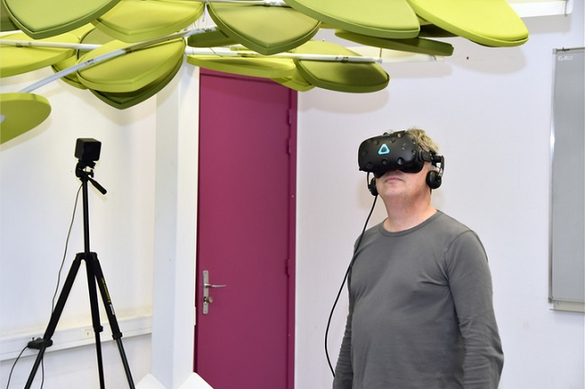
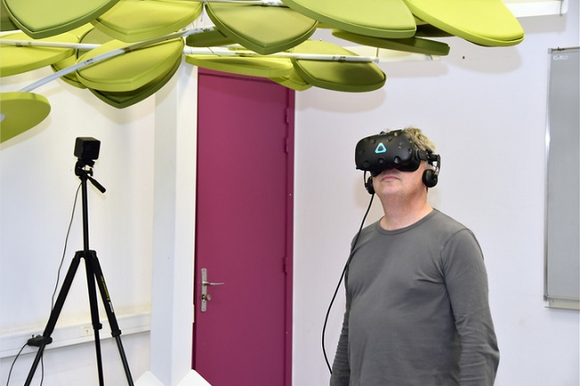
 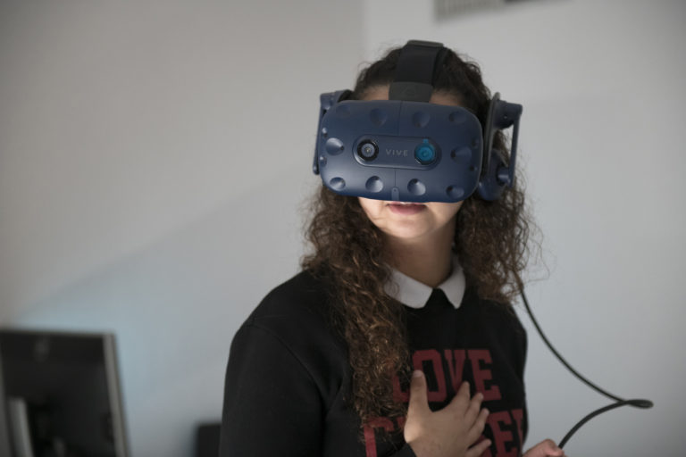
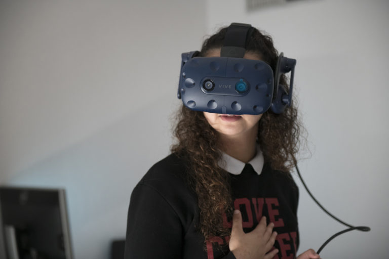


 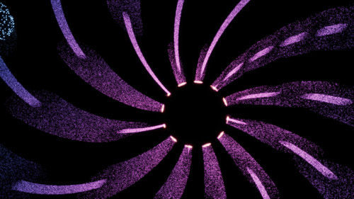
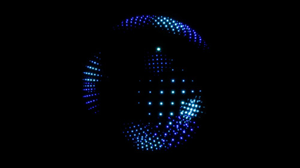
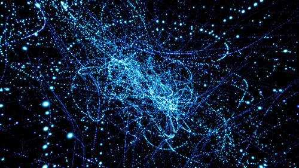
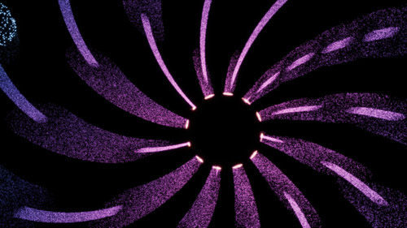
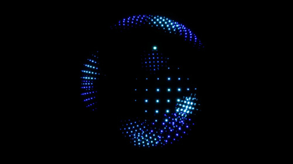
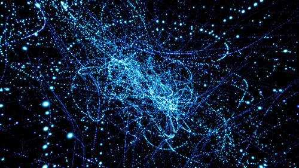
 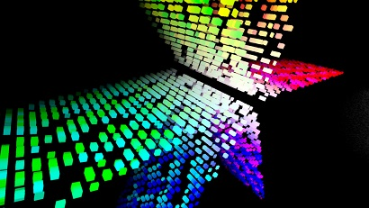
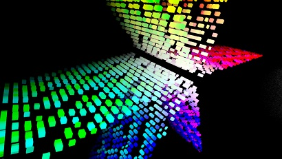


 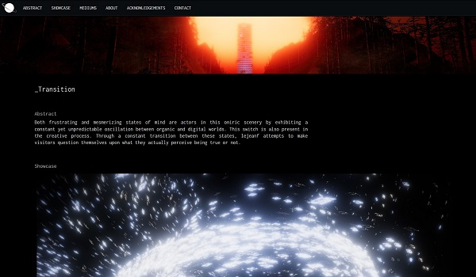
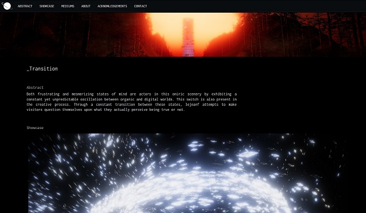


 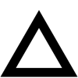
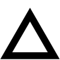


![Variations Physiques at Festival DN[A] 2019](img/news/varphy-tvgre.jpg)